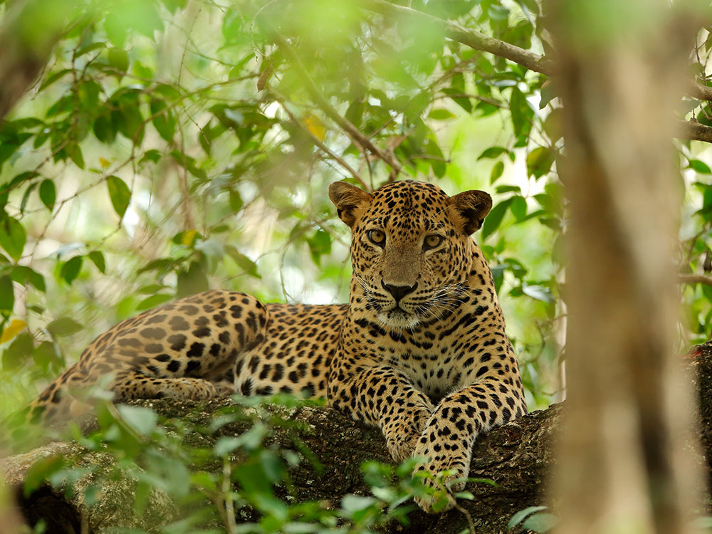
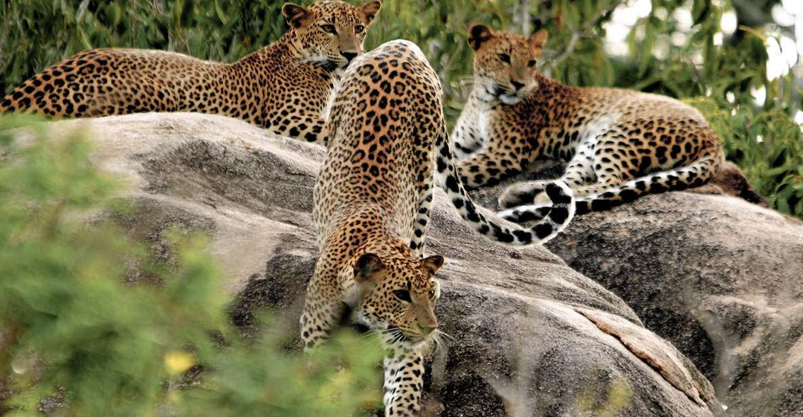
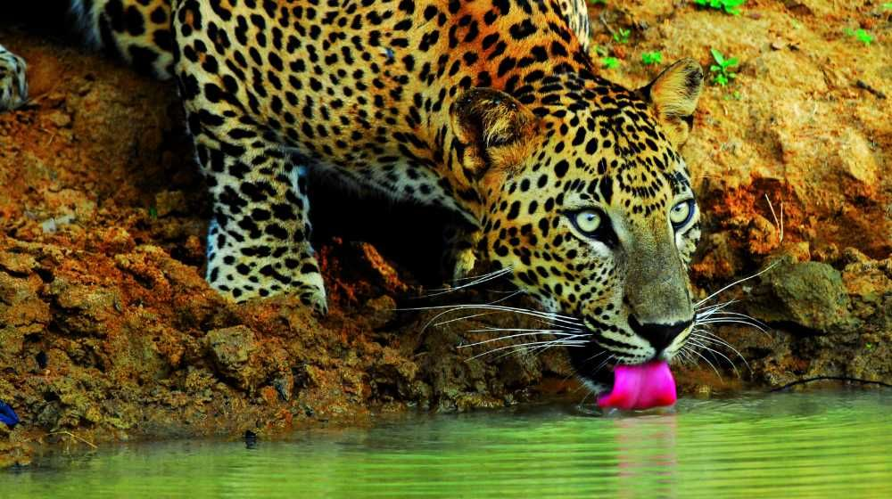
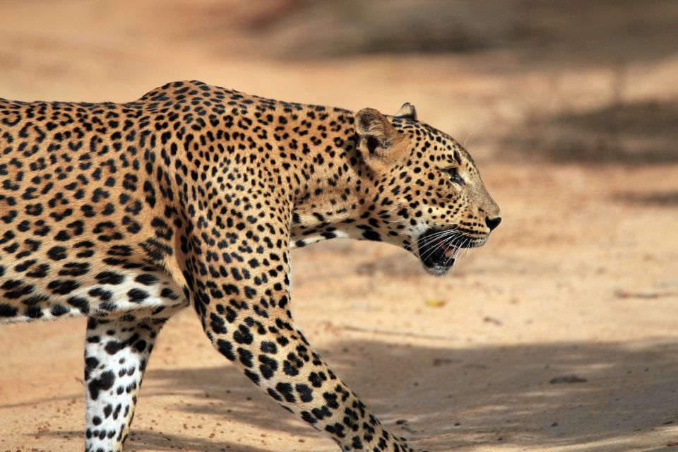
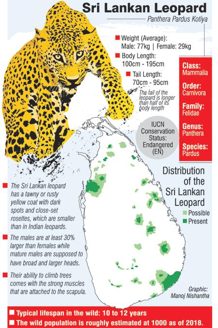
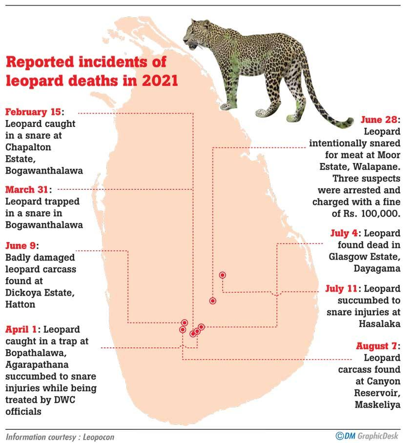

While the Sri Lankan lion isn’t much more than a majestic myth adopted by the country’s ancient kings, another magnificent big cat prowls the island physically today – the leopard.Click here for more info


Covering around 950 square kilometres and forming a large chunk of the south-east coast by Tissamaharama, the park hosts the widest selection of wildlife to be found on the island. Click here for more info

Leopard sightings have been more common recently and it’s slightly less busy than Yala. The same wildlife roam Wilpattu as at Yala and the animals are slightly less cautious of humans.Click here for more info

If you go to Sri Lanka expecting to see a leopard, you’ll most likely come away disappointed. But never fear, you’ll be more than satisfied for wildlife. Click here for more info

Leopards are killed by people either accidentally in wire snares set for other species, or as retaliation after livestock depredation (usually through poisoning the livestock carcass).
They are also occasionally shot. Since 2010, over 90 leopards are known to have been killed by people in Sri Lanka. Click here for more info
Limiting the hunting and poaching of prey species and managing unsustainable logging practices could be the key to protecting the leopard long term.

Leopards are top predators in their landscape, so they're crucial role for keeping the right balance of species in their area.
That also affects the health of the forests and wider environment, which provides local wildlife and people with food, water and other resources. Click here for more info